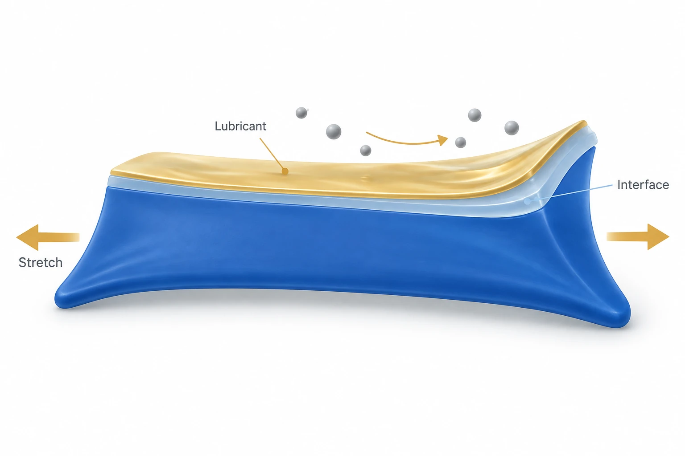

이 연구가 다루는 문제
신축성 접착층에 불소계 고분자와 윤활액을 결합해, 생체재료가 늘어날 때도 오염물이 쉽게 달라붙지 않는 표면을 설계합니다. 시험한 반복 인장 조건에서 코팅의 균열과 액체 반발 성능을 비교했습니다.
연구가 시작된 배경
오염 부착을 줄이는 코팅은 바탕 재료가 늘어날 때도 끊어지지 않아야 합니다. 균열이 생기면 아래쪽 표면이 드러나고 윤활 계면이 끊어져, 처음 측정한 반발 성능을 유지하지 못할 수 있습니다. L-VIP는 신축성과 연속적인 윤활 계면을 함께 유지하는 문제를 다룹니다.
어떻게 접근했나요?
L-VIP는 늘어나는 접착층, 불소계 고분자, 윤활액을 결합합니다. 접착층은 코팅을 기판에 고정하고, 불소계 고분자와 윤활액은 외부와 맞닿는 계면을 만듭니다. 부착 안정성, 균열 저항, 오염 부착 저항은 연결되어 있지만 각각 평가해야 합니다.

AI 생성 개념도입니다. 기판이 늘어나도 윤활 계면을 연속적으로 유지하려는 L-VIP의 설계를 설명합니다. 색띠와 화살표는 기능을 나타내며, 측정된 층 구조·두께·입자 경로가 아닙니다. 실험 결과나 보충 없는 이식 수명을 보여 주지 않습니다.
실제 단면, 분자 구조, 제작 과정을 재현한 그림이 아닙니다. 정량 변형률·반복 수·손상 한계, 힘, 살균 효과, 기판 간 성능 순위, 치료 결과를 나타내지 않습니다.
논문 원그림을 복제한 이미지가 아니며, 원그림 재사용 허가를 의미하지 않습니다.
무엇을 어떻게 평가했나요?
늘어난 Ecoflex에서 무코팅 표면과 L-VIP 표면의 혈액 방울 거동을 비교하고, 반복 신장에서는 기존 윤활액 주입 코팅과 균열 발생을 비교했습니다. 현미경 관찰은 표면 구조와 방울 거동의 관계를 보여 줍니다. 피하 PVA 이식과 전기 절연 시험은 조직 반응과 절연 성능을 별도로 평가했습니다.
주요 결과
시험한 반복 신장 조건에서 L-VIP는 기존 코팅에 나타난 균열 없이 반발 성능을 유지했습니다. 신축 한계를 넘으면 결함이 생기고 젖음 특성이 달라졌습니다. 구조 관찰과 젖음 시험을 함께 보면, 초기 반발 성능뿐 아니라 움직이는 동안 계면이 유지되는지가 중요함을 알 수 있습니다.
아직 남아 있는 질문
이식 후 회수한 시편은 PFPE 윤활액에 다시 담근 뒤 오염 부착과 접촉각을 평가했습니다. 따라서 결과는 재처리 후의 기능을 보여 주며, 처음 넣은 윤활액이 보충 없이 유지되었음을 뜻하지는 않습니다. 단기 조직 반응, 윤활액 고갈, 불소계 액체의 잔류는 각각 남은 질문이며, 유지보수 없는 이식 수명은 입증되지 않았습니다.
회수한 이식 시료의 표면 시험은 PFPE 윤활액을 다시 주입한 뒤 수행했습니다. 원래 윤활액이 이식 기간 내내 유지됐다는 증거로 해석하지 않습니다.
함께 읽을 연구
Bioinspired self-repairing slippery surfaces with pressure-stable omniphobicity
SLIPS는 윤활액을 유지하는 방식을 비교할 수 있는 사례입니다. L-VIP는 기판이 늘어나는 동안 그 계면이 유지되는지를 다룹니다.
외부 초록의 압력 안정성은 신축성 기판의 균열 저항과 다른 특성입니다.
초록을 참고한 소개RESEARCH NEWS
연구 소식
미확인 후보와 접근 제한 (1)
해설에 사용한 자료
이 해설은 논문 본문과 원그림을 참고합니다. 보충자료와 원자료의 별도 검토는 완료하지 않았습니다.